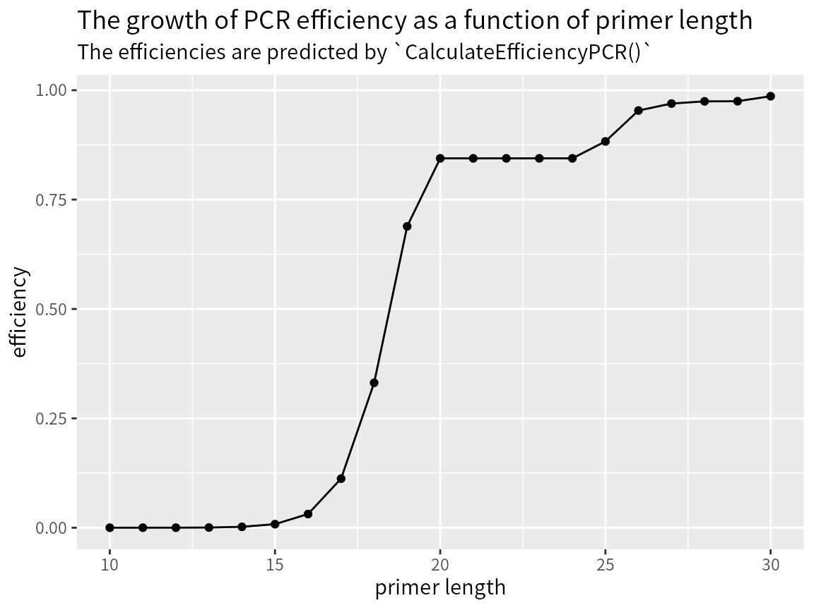
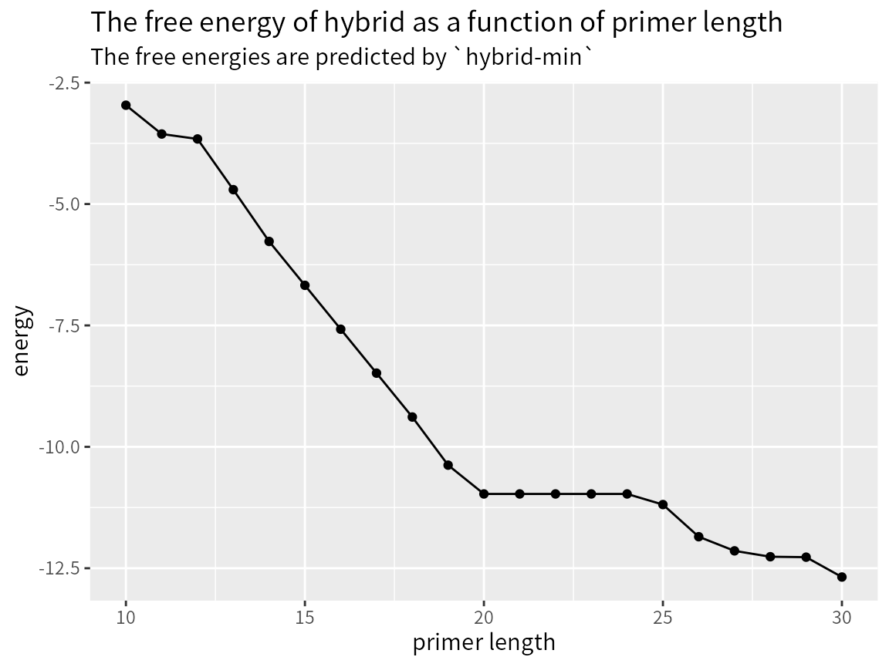

How to design species-specific primers
DesignSpeciesSpecificPrimers.Rmd从序列到引物
This document describes how to design group-specific primers using
the DECIPHER package through the use of the
DesignPrimers() function. As a case study, this tutorial
focuses on the Internal Transcribed Spacer (ITS)1 of fully sequenced
genomes belonging to different species of the genus
Streptomyces.
The examples in this document are directed towards finding primers that target a single species of Streptomyces among a number of closely related Streptomyces species.
Suppose we have the sequences of different strains.
fas <- system.file("extdata", "Streptomyces_ITS_aligned.fas", package="DECIPHER")Import sequence to a in-memory SQLite database.
# create the sequence database in memory
dbConn <- dbConnect(SQLite(), ":memory:")
Seqs2DB(fas, "FASTA", dbConn, "Streptomyces")
#>
Reading FASTA file chunk 1
#>
#> 88 total sequences in table Seqs.
#> Time difference of 0.04 secs数据库现在有两个表，分别是 Seqs 和
_Seqs，前者存放序列的 Meta 信息，后者存放序列及其
Quality。
library(DBI)
dbListTables(dbConn)
#> [1] "Seqs" "_Seqs"Seqs 表格可以通过 BrowseDB() 命令查看，而
_Seqs 则不能。这可能是作者为了保持序列不被人修改。
BrowseDB(dbConn, tblName = "Seqs") # 界面可交互时会打开一个网页，如下图所示
dbGetQuery(dbConn, "select * from Seqs limit 3")
#> row_names identifier description
#> 1 1 Streptomyces supercont3.1 of Streptomyces albus J1074
#> 2 2 Streptomyces supercont3.1 of Streptomyces albus J1074
#> 3 3 Streptomyces supercont1.1 of Streptomyces clavuligerus ATCC 27064为了检查 _Seqs 表格的内容，需要调用 SQL 语句2。
dbGetQuery(dbConn, "select * from _Seqs limit 3")
#> row_names sequence quality
#> 1 1 blob[183 B] blob[0 B]
#> 2 2 blob[196 B] blob[0 B]
#> 3 3 blob[190 B] blob[0 B]Defining groups of the sequences in database.
desc <- dbGetQuery(dbConn, "select description from Seqs")
desc |> as_tibble()
#> # A tibble: 88 × 1
#> description
#> <chr>
#> 1 "supercont3.1 of Streptomyces albus J1074"
#> 2 "supercont3.1 of Streptomyces albus J1074"
#> 3 "supercont1.1 of Streptomyces clavuligerus ATCC 27064"
#> 4 "supercont1.1 of Streptomyces clavuligerus ATCC 27064"
#> 5 "supercont1.1 of Streptomyces clavuligerus ATCC 27064"
#> 6 "supercont1.1 of Streptomyces ghanaensis ATCC 14672"
#> 7 "supercont1.1 of Streptomyces griseoflavus Tu4000"
#> 8 "supercont1.1 of Streptomyces lividans TK24 "
#> 9 "supercont1.1 of Streptomyces lividans TK24 "
#> 10 "supercont1.1 of Streptomyces lividans TK24 "
#> # ℹ 78 more rowsSpecies names are extracted from description.
The first way doing this job only use base functions.
The second way use stringr functions.
species = desc |>
unlist() |>
str_remove("^.*Streptomyces ") |>
str_remove("sp[\\._ ]") |>
trimws() |>
str_remove(" .*$")
unique(species)
#> [1] "albus" "clavuligerus" "ghanaensis"
#> [4] "griseoflavus" "lividans" "pristinaespiralis"
#> [7] "Mg1" "SPB78" "AA4"
#> [10] "SPB74" "SirexAA-E" "scabiei"
#> [13] "griseus" "coelicolor" "cattleya"
#> [16] "bingchenggensis" "avermitilis" "C"
#> [19] "Tu6071"Now that we have our 19 different species names.
Next, we must add them to the database as the identifier of each species.
Add2DB(data.frame(identifier=species, stringsAsFactors=FALSE), dbConn)
#> Expression:
#> update Seqs set identifier = :identifier where row_names = :row_names
#>
#> Added to table Seqs: "identifier".
#>
#> Time difference of 0 secs经过上述操作后，序列的 identifier
已经从“Streptomyces”更新为“albus”、“clavuligerus”等种名。
dbGetQuery(dbConn, "select * from Seqs limit 3")
#> row_names identifier description
#> 1 1 albus supercont3.1 of Streptomyces albus J1074
#> 2 2 albus supercont3.1 of Streptomyces albus J1074
#> 3 3 clavuligerus supercont1.1 of Streptomyces clavuligerus ATCC 27064To continue, we create a set of k-mers, namely “tiles”.
这些“瓦片”存储在数据库的“Tiles”数据表中。
tiles = TileSeqs(dbConn, add2tbl="Tiles", minCoverage=1)
#> ================================================================================
#>
#> Time difference of 8.47 secs为什么叫做“瓦片”呢？是因为这些短序列长度一直，且彼此重叠。从下面输出的
start， target_site 等都可以看出来。
tiles |>
dplyr::select(row_names, start, end, misprime, id, coverage, groupCoverage, target_site) |>
head(20)
#> row_names start end misprime id coverage groupCoverage
#> 1 1 1 27 TRUE albus 0.6 0.6
#> 2 2 2 28 TRUE albus 0.6 0.6
#> 3 3 3 29 TRUE albus 0.6 0.6
#> 4 4 4 30 TRUE albus 0.6 0.6
#> 5 5 5 31 FALSE albus 1.0 1.0
#> 6 6 6 32 FALSE albus 1.0 1.0
#> 7 7 7 33 FALSE albus 1.0 1.0
#> 8 8 8 34 FALSE albus 1.0 1.0
#> 9 9 9 35 FALSE albus 1.0 1.0
#> 10 10 10 36 FALSE albus 1.0 1.0
#> 11 11 11 37 FALSE albus 1.0 1.0
#> 12 12 12 38 FALSE albus 1.0 1.0
#> 13 13 13 39 FALSE albus 1.0 1.0
#> 14 14 14 40 FALSE albus 1.0 1.0
#> 15 15 15 41 FALSE albus 1.0 1.0
#> 16 16 16 42 FALSE albus 1.0 1.0
#> 17 17 17 43 FALSE albus 1.0 1.0
#> 18 18 18 44 FALSE albus 1.0 1.0
#> 19 19 19 45 FALSE albus 1.0 1.0
#> 20 20 20 46 FALSE albus 1.0 1.0
#> target_site
#> 1 TGTACACACCGCCCGTCACGTCACGAA
#> 2 GTACACACCGCCCGTCACGTCACGAAA
#> 3 TACACACCGCCCGTCACGTCACGAAAG
#> 4 ACACACCGCCCGTCACGTCACGAAAGT
#> 5 CACACCGCCCGTCACGTCACGAAAGTC
#> 6 ACACCGCCCGTCACGTCACGAAAGTCG
#> 7 CACCGCCCGTCACGTCACGAAAGTCGG
#> 8 ACCGCCCGTCACGTCACGAAAGTCGGT
#> 9 CCGCCCGTCACGTCACGAAAGTCGGTA
#> 10 CGCCCGTCACGTCACGAAAGTCGGTAA
#> 11 GCCCGTCACGTCACGAAAGTCGGTAAC
#> 12 CCCGTCACGTCACGAAAGTCGGTAACA
#> 13 CCGTCACGTCACGAAAGTCGGTAACAC
#> 14 CGTCACGTCACGAAAGTCGGTAACACC
#> 15 GTCACGTCACGAAAGTCGGTAACACCC
#> 16 TCACGTCACGAAAGTCGGTAACACCCG
#> 17 CACGTCACGAAAGTCGGTAACACCCGA
#> 18 ACGTCACGAAAGTCGGTAACACCCGAA
#> 19 CGTCACGAAAGTCGGTAACACCCGAAG
#> 20 GTCACGAAAGTCGGTAACACCCGAAGCTiles are then used to design all possible primers.
DECIPHER 从 Tiles 到引物的过程不是几句话能够说清楚的，更多信息参见下面的内容（“关于引物设计过程”）。
只要把 numPrimerSets 的值设为
1，就可以获得最佳的一组引物，一组引物包含的引物数量由
maxPermutations 决定。
primers = DesignPrimers(tiles,
identifier = "lividans",
minCoverage = 1,
minGroupCoverage = 1,
maxPermutations = 1,
numPrimerSets = 3)
#>
#> lividans (407 candidate primers):
#> ================================================================================
#> Determining Best Primer Pairs:
#> ================================================================================
#>
#> Time difference of 7.1 secs
primers |> as_tibble() |>
dplyr::select(identifier, product_size, ends_with("primer"), ends_with("efficiency"))
#> # A tibble: 3 × 6
#> identifier product_size forward_primer[,1] reverse_primer[,1]
#> <I<chr>> <I<dbl>> <I<chr>> <I<chr>>
#> 1 lividans 93 TCCTGCACGGTTGCTCAT TACTCGTGTTCCACGCCGAAG
#> 2 lividans 105 TCCTGCACGGTTGCTCAT CTTGCCTTCCCTTACTCGTGT
#> 3 lividans 109 TCCTGCACGGTTGCTCAT CACCCTTGCCTTCCCTTACT
#> # ℹ 2 more variables: forward_efficiency <I<dbl[,1]>[,1]>,
#> # reverse_efficiency <I<dbl[,1]>[,1]>检查引物扩增
使用模拟扩增，得到预期的扩增产物。
specific_primer = c(primers$forward_primer[[1]], primers$reverse_primer[[1]])
template = readDNAStringSet(fas) |>
RemoveGaps()
product = AmplifyDNA(specific_primer,
template,
maxProductSize = 1500,
annealingTemp = 60,
P = 4e-7)
product
#> DNAStringSet object of length 20:
#> width seq names
#> [1] 93 TCCTGCACGGTTGCTCATGGGTG...GCTTCGGCGTGGAACACGAGTA 96.6% (1 x 2) sup...
#> [2] 93 TCCTGCACGGTTGCTCATGGGTG...GCTTCGGCGTGGAACACGAGTA 96.6% (1 x 2) sup...
#> [3] 93 TCCTGCACGGTTGCTCATGGGTG...GCTTCGGCGTGGAACACGAGTA 96.6% (1 x 2) sup...
#> [4] 93 TCCTGCACGGTTGCTCATGGGTG...GCTTCGGCGTGGAACACGAGTA 96.6% (1 x 2) gi|...
#> [5] 93 TCCTGCACGGTTGCTCATGGGTG...GCTTCGGCGTGGAACACGAGTA 96.6% (1 x 2) gi|...
#> ... ... ...
#> [16] 93 TCCTGCACGGTTGCTCATGGGTG...GCTTCGGCGTGGAACACGAGTA 17.2% (1 x 2) gi|...
#> [17] 93 TCCTGCACGGTTGCTCATGGGTG...GCTTCGGCGTGGAACACGAGTA 17.2% (1 x 2) gi|...
#> [18] 93 TCCTGCACGGTTGCTCATGGGTG...GCTTCGGCGTGGAACACGAGTA 17.2% (1 x 2) gi|...
#> [19] 93 TCCTGCACGGTTGCTCATGGGTG...GCTTCGGCGTGGAACACGAGTA 17.2% (1 x 2) gi|...
#> [20] 89 TCCTGCACGGTTGCTCATGGGTG...GCTTCGGCGTGGAACACGAGTA 1.5% (1 x 2) gi|3...结果显示，两条引物的扩增效率是 96.6% 等， 针对的模板分别是:
names(product)
#> [1] "96.6% (1 x 2) supercont1.1 of Streptomyces lividans TK24 "
#> [2] "96.6% (1 x 2) supercont1.1 of Streptomyces lividans TK24 "
#> [3] "96.6% (1 x 2) supercont1.1 of Streptomyces lividans TK24 "
#> [4] "96.6% (1 x 2) gi|32141095|ref|NC_003888.3| Streptomyces coelicolor A3(2) chromosome, complete genome"
#> [5] "96.6% (1 x 2) gi|32141095|ref|NC_003888.3| Streptomyces coelicolor A3(2) chromosome, complete genome"
#> [6] "96.6% (1 x 2) gi|224184288|gb|ACEY01000178.1| Streptomyces lividans TK24 cont1.178, whole genome shotgun sequence"
#> [7] "96.6% (1 x 2) gi|224184273|gb|ACEY01000193.1| Streptomyces lividans TK24 cont1.193, whole genome shotgun sequence"
#> [8] "96.6% (1 x 2) gi|224184192|gb|ACEY01000274.1| Streptomyces lividans TK24 cont1.274, whole genome shotgun sequence"
#> [9] "96.6% (1 x 2) gi|224581106|ref|NZ_GG657756.1| Streptomyces lividans TK24 genomic scaffold supercont1.1, whole genome shotgun sequence"
#> [10] "96.6% (1 x 2) gi|224581106|ref|NZ_GG657756.1| Streptomyces lividans TK24 genomic scaffold supercont1.1, whole genome shotgun sequence"
#> [11] "96.6% (1 x 2) gi|224581106|ref|NZ_GG657756.1| Streptomyces lividans TK24 genomic scaffold supercont1.1, whole genome shotgun sequence"
#> [12] "17.2% (1 x 2) supercont1.1 of Streptomyces clavuligerus ATCC 27064"
#> [13] "17.2% (1 x 2) supercont1.1 of Streptomyces clavuligerus ATCC 27064"
#> [14] "17.2% (1 x 2) supercont1.1 of Streptomyces clavuligerus ATCC 27064"
#> [15] "17.2% (1 x 2) gi|326336847|ref|NZ_ADWJ01000008.1| Streptomyces clavuligerus ATCC 27064 chr_contig8, whole genome shotgun sequence"
#> [16] "17.2% (1 x 2) gi|326336852|ref|NZ_ADWJ01000013.1| Streptomyces clavuligerus ATCC 27064 chr_contig13, whole genome shotgun sequence"
#> [17] "17.2% (1 x 2) gi|326336869|ref|NZ_ADWJ01000030.1| Streptomyces clavuligerus ATCC 27064 chr_contig30, whole genome shotgun sequence"
#> [18] "17.2% (1 x 2) gi|326336877|ref|NZ_ADWJ01000038.1| Streptomyces clavuligerus ATCC 27064 chr_contig38, whole genome shotgun sequence"
#> [19] "17.2% (1 x 2) gi|326336946|ref|NZ_CM001015.1| Streptomyces clavuligerus ATCC 27064 chromosome, whole genome shotgun sequence"
#> [20] "1.5% (1 x 2) gi|357397620|ref|NC_016111.1| Streptomyces cattleya NRRL 8057, complete genome"虽然这两条引物会与其它物种产生非特异性扩增，但是理论上的扩增效率显著低于靶向物种。
关于引物设计过程
在 DECIPHER 的论文摘要中做了如下描述：
We describe a semi-empirical framework that combines thermodynamic models of primer hybridization with experimentally determined elongation biases introduced by 3’-end mismatches for improving polymerase chain reaction (PCR)-based sequence discrimination. The framework enables rational and automatic design of primers for optimal targeting of one or more sequences in ensembles of nearly identical DNA templates. In situations where optimal targeting is not feasible, the framework accurately predicts non-target sequences that are difficult to distinguish with PCR alone. Based on the synergistic effects of disparate sources of PCR bias, we used our framework to robustly distinguish between two alleles that differ by a single base pair.
Google 翻译的结果如下：
我们描述了一个半经验框架，该框架将引物杂交的热力学模型与实验确定的由 3’ 末端错配引入的延伸偏差相结合，以改善基于聚合酶链式反应 (PCR) 的序列辨别。 该框架能够合理、自动地设计引物，以最佳靶向几乎相同的 DNA 模板集合中的一个或多个序列。 在最佳靶向不可行的情况下，该框架可以准确预测仅用 PCR 难以区分的非靶序列。 基于不同来源的 PCR 偏差的协同效应，我们使用我们的框架来稳健地区分仅具有单个碱基对差异的两个等位基因。
大概的意思就是，除了检查碱基互补配对（杂交）的情况，还考虑了引物 3’-端错配导致的延伸效率不高的情况。这样，可以在 3’-端优先设计一些错配碱基，从而区分出仅具有单个核酸差异的高度保守序列。
为了能够计算引物与模板杂交时的亲和力，DECIPHER 使用了 UNAFold
软件中的 hybrid-min 命令。
DesignPrimers() 的几个关键参数
-
minLength引物最小碱基数Integer providing the minimum length of primers to consider in the design.
-
maxLength引物最大碱基数Integer providing the maximum length of primers to consider in the design, which must be less than or equal to the maxLength of tiles.
-
maxPermutations每组（Set）引物最多含有的引物数目。默认为 4，设为 1 则一组引物只得到一对两条序列。Integer providing the maximum number of permutations considered as part of a forward or reverse primer set.
-
minCoverageNumeric giving the minimum fraction of the target group’s sequences that must be covered with the primer set.
-
minGroupCoverageNumeric giving the minimum fraction of the target group that must have sequence information (not terminal gaps) in the region covered by the primer set.
-
minEfficiency引物与模板杂交的效率（应当是由hybrid-min计算得到的）Numeric giving the minimum efficiency of hybridization desired for the primer set. Note that an efficiency of 99% (0.99) will greatly lower predicted specificity of the primer set, however an efficiency of 50% (0.5) may be too low in actuality to amplify the target group due to error in melt temperature predictions.
-
worstScore使用引物得分（score）过滤时的阈值。设为 -5 时，得分在 \([-5, 0]\) 区间的引物会被保留。Numeric specifying the score cutoff to remove target sites from consideration. For example, a
worstScoreof -5 will remove all primer sets scoring below -5, although this may eventually result in no primer sets meeting the design criteria. -
numPrimerSets输出引物的组合数。默认为 0，输出所有引物组合；设为 1，2，3 等数值时会输出最佳的 1，2，3 组引物。Integer giving the optimal number of primer sets (forward and reverse primer sets) to design. If set to zero then all possible forward and reverse primers are returned, but the primer sets minimizing potential cross-amplifications are not chosen.
-
minProductSize扩增产物的最小长度Integer giving the minimum number of nucleotides desired in the PCR product.
-
maxProductSize扩增产物的最大长度Integer giving the maximum number of nucleotides desired in the PCR product.
-
maxSearchSize默认为 1500，意味着查找引物错配的区域为上下游 1500 bp 以内。Integer giving the maximum number of nucleotides to search for false priming upstream and downstream of the expected binding site.
-
batchSize使用CalculateEfficiencyPCR()计算引物扩增效率时的批处理个数Integer specifying the number of primers to simulate hybridization per batch that is passed to
CalculateEfficiencyPCR(). -
maxDistance与引物延伸效率性有关的设置Numeric specifying the maximal fraction of mismatched base pairings on a rolling basis beginning from the 3’ end of the primer.
-
primerDimer引物二聚体的扩增效率，默认为 1e-7。Numeric giving the maximum amplification efficiency of potential primer-dimer products.
-
ragged5Prime与引物延伸效率性有关的设置Logical specifying whether the 5’ end or 3’ end of primer permutations targeting the same site should be varying lengths.
-
taqEfficiency与引物延伸效率性有关的设置。如果使用高保真酶，则设为FALSE。Logical determining whether to make use of elongation efficiency and
maxDistanceto increase predictive accuracy for Taq DNA Polymerase amplifying primers with mismatches near the 3’ terminus. Note that this should be set toFALSEif using a high-fidelity polymerase with 3’ to 5’ exonuclease activity. -
induceMismatch与引物延伸效率性有关的设置Logical or integer specifying whether to induce a mismatch in the primer with the template DNA. If
TRUEthen a mismatch is induced at the 6th primer position. If an integer value is provided between 2 and 6 then a mismatch is induced in that primer position, where the 3’-end is defined as position 1.
关于 UNAFold
UNAFold is a comprehensive software package for nucleic acid folding and hybridization prediction. The name is derived from “Unified Nucleic Acid Folding”. Folding of single-stranded RNA or DNA, or hybridization between two single-strands, is accomplished in a variety of ways. Partition functions can be computed to derive base pair probabilities and stochastic samples of foldings or hybridizations. Energy minimization methods compute minimum free energy foldings or hybridizations, and can also compute suboptimal foldings that mimic the performance of the famous mfold software.
UNAFold 是一个用于核酸折叠和杂交预测的综合软件包。该名称源自“统一核酸折叠”。 单链 RNA 或 DNA 的折叠或两条单链之间的杂交可以通过多种方式完成。 可以计算配分函数来导出碱基对概率和折叠或杂交的随机样本。 能量最小化方法计算最小自由能折叠或杂交，还可以计算模仿著名 mfold 软件性能的次优折叠。
For melting simulations, the package computes not just melting temperatures, but entire melting profiles. UV absorbance at 260 nm, heat capacity change (Cp), and mole fractions of different molecular species are computed as a function of temperature. ITC (Isothermal Titration Calorimetry) and van’t Hoff plots are also simulated.
对于熔解曲线模拟，该软件包不仅可以计算熔解温度（Tm 值），还可以计算整个熔解曲线。 计算 260 nm 处的 UV 吸光度、热容变化 (Cp) 和不同分子种类的摩尔分数作为温度的函数。 此外，还可以模拟 ITC（等温滴定量热法）和范特霍夫图。
Images of secondary structures, hybridizations, and dot plots may be computed from raw UNAFold output using easily available auxiliary software. Similarly, melting profile plots can be created. These melting plots include experimental results if they are provided.
二级结构、杂交和点图的图像可以使用容易获得的辅助软件（如 R 语言）从原始 UNAFold 输出中计算出来。 类似地，可以创建熔解曲线图。借助于这种设计，用户可以将模拟的结果与实验结果整合在一起展示出来。
UNAFold is “command line” driven. Underlying compiled programs may be used individually, or in special combinations through the use of a variety of Perl scripts. Users are encouraged to create their own scripts to supplement what comes with the package.
UNAFold 是命令行程序。包括多个可以单独使用的可执行程序，还有 Perl 脚本组合可执行程序的一些脚本。用户可以创建自己的脚本来补充软件包附带的内容。
计算 PCR 的扩增效率
CalculateEfficiencyPCR()
计算扩增效率时，一条引物对应一个模板序列，引物与模板序列要能够配对3。
target = "AAAAACGGGGAGCGGGGGGAAAAACTCAACCCGAGGAGCGCGT"
primers = lapply(10:20, substr, x = target, start = 1) |> unlist()
template = reverseComplement(DNAStringSet(target))
CalculateEfficiencyPCR(primers[[1]], template, temp = 60, P = 4e-7, ions = 0.02)
#> [1] 3.525157e-05
CalculateEfficiencyPCR(primers[[10]], template, temp = 60, P = 4e-7, ions = 0.02)
#> [1] 0.6888385接下来，我们构建不同长度的引物，分别计算其扩增效率，并使用
ggplot2 进行可视化。
library(ggplot2)
primer_len = 10L:30L
primers = lapply(primer_len, substr, x = target, start = 1) |> unlist()
template = reverseComplement(DNAStringSet(rep(target, length(primers))))
efficiency = CalculateEfficiencyPCR(primers, template, temp = 60, P = 4e-7, ions = 0.02)
df = tibble(length = primer_len, efficiency = efficiency)
ggplot(df, aes(length, efficiency)) +
geom_point() +
geom_line() +
labs(title = "The growth of PCR efficiency as a function of primer length",
subtitle = "The efficiencies are predicted by `CalculateEfficiencyPCR()`",
x = "primer length")
CalculateEfficiencyPCR() 计算扩增效率时会调用
hybrid-min
程序，并将参数传递给它。下面构造一个命令，用原生的
hybrid-min 程序计算扩增效率，并将结果与
CalculateEfficiencyPCR() 的计算结果进行比较。
hybrid-min 后面要接两两匹配的输入。
cmd = "hybrid-min -n DNA -t 60 -T 60 -N 0.02 -E -q"
sequences = paste(primers, template[[1]] |> as.character(), collapse = " ")
free_energies = system(paste(cmd, sequences), intern = TRUE) |> as.numeric()
free_energies
#> [1] -2.965 -3.558 -3.660 -4.704 -5.770 -6.674 -7.578 -8.482 -9.386
#> [10] -10.377 -10.970 -10.970 -10.970 -10.970 -10.970 -11.189 -11.851 -12.142
#> [19] -12.263 -12.272 -12.681Free energy 不是扩增效率。CalculateEfficiencyPCR()
内部要经过复杂的转换，才最终得到扩增效率。
- 将 primer 和 target 放在一起进行多序列比对
p <- pairwiseAlignment(primer,
seqs2,
type = "global-local",
gapOpen = -5,
gapExtension = -5)- 计算延伸效率
# 转换单位
RT <- 0.0019871*(273.15 + temp) # [kcal/mol]
# calculate elongation efficiency
eff_taq <- .Call("terminalMismatch", seqs1, seqs2, maxDistance, maxGaps, processors, PACKAGE="DECIPHER")
# 计算 K1
K1 <- exp(-dG1/RT)
# 计算 eff
eff <- P*K1/(1 + P*K1)*eff_taq鉴于此，不能直接比较两个结果。
df$energy = free_energies
ggplot(df, aes(length, energy)) +
geom_point() +
geom_line() +
labs(title = "The free energy of hybrid as a function of primer length",
subtitle = "The free energies are predicted by `hybrid-min`",
x = "primer length")
模拟扩增
用一条短引物，可以扩增得到一个回文序列。
data("yeastSEQCHR1")
# match a single primer that acts as both the forward and reverse
primer1 = "TGGAAGCTGAAACG"
AmplifyDNA(primer1, yeastSEQCHR1, annealingTemp=55, P=4e-7, maxProductSize=500)
#> DNAStringSet object of length 1:
#> width seq names
#> [1] 298 TGGAAGCTGAAACGTCTAACGGA...CAATCCTTGCGTTTCAGCTTCCA 26.8% (1 x 1) 1用两条引物，可以扩增得到一个引物二聚体，以及其它一些产物。
# perform a typical amplification with two primer sequences:
primer2 <- c("GGCTGTTGTTGGTGTTCTGATGACAAT", "TGTCATCAGAACACCAACAAC")
AmplifyDNA(primer2, yeastSEQCHR1, annealingTemp=55, P=4e-7, maxProductSize=500)
#> DNAStringSet object of length 58:
#> width seq names
#> [1] 25 GGCTGTTGTTGGTGTTCTGATGACA 99.7% (1 x 2) 1
#> [2] 160 GGCTGTTGTTGGTGTTCTGATGA...TGTTGTTGGTGTTCTGATGACA 99.7% (1 x 2) 1
#> [3] 295 GGCTGTTGTTGGTGTTCTGATGA...TGTTGTTGGTGTTCTGATGACA 99.7% (1 x 2) 1
#> [4] 430 GGCTGTTGTTGGTGTTCTGATGA...TGTTGTTGGTGTTCTGATGACA 99.7% (1 x 2) 1
#> [5] 25 GGCTGTTGTTGGTGTTCTGATGACA 99.7% (1 x 2) 1
#> ... ... ...
#> [54] 295 TGTCATCAGAACACCAACAACTG...CATCAGAACACCAACAACAGCC 79.3% (2 x 1) 1
#> [55] 430 TGTCATCAGAACACCAACAACTG...CATCAGAACACCAACAACAGCC 79.3% (2 x 1) 1
#> [56] 160 GGCTGTTGTTGGTGTTCTGATGA...AGTTGTTGGTGTTCTGATGACA 79.3% (1 x 2) 1
#> [57] 160 TGTCATCAGAACACCAACAACTG...CATCAGAACACCAACAACAGCC 79.3% (2 x 1) 1
#> [58] 25 GGCTGTTGTTGGTGTTCTGATGACA 78.2% (1 x 2) 1用一组三条引物，可以扩增得到更多的片段。
# perform a multiplex PCR amplification with multiple primers:
primers <- c(primer1, primer2)
AmplifyDNA(primers, yeastSEQCHR1, annealingTemp=55, P=4e-7, maxProductSize=500)
#> DNAStringSet object of length 59:
#> width seq names
#> [1] 25 GGCTGTTGTTGGTGTTCTGATGACA 99.7% (2 x 3) 1
#> [2] 160 GGCTGTTGTTGGTGTTCTGATGA...TGTTGTTGGTGTTCTGATGACA 99.7% (2 x 3) 1
#> [3] 295 GGCTGTTGTTGGTGTTCTGATGA...TGTTGTTGGTGTTCTGATGACA 99.7% (2 x 3) 1
#> [4] 430 GGCTGTTGTTGGTGTTCTGATGA...TGTTGTTGGTGTTCTGATGACA 99.7% (2 x 3) 1
#> [5] 25 GGCTGTTGTTGGTGTTCTGATGACA 99.7% (2 x 3) 1
#> ... ... ...
#> [55] 430 TGTCATCAGAACACCAACAACTG...CATCAGAACACCAACAACAGCC 79.3% (3 x 2) 1
#> [56] 160 GGCTGTTGTTGGTGTTCTGATGA...AGTTGTTGGTGTTCTGATGACA 79.3% (2 x 3) 1
#> [57] 160 TGTCATCAGAACACCAACAACTG...CATCAGAACACCAACAACAGCC 79.3% (3 x 2) 1
#> [58] 25 GGCTGTTGTTGGTGTTCTGATGACA 78.2% (2 x 3) 1
#> [59] 298 TGGAAGCTGAAACGTCTAACGGA...AATCCTTGCGTTTCAGCTTCCA 26.8% (1 x 1) 1安装 OligoArrayAux
参见：http://www.unafold.org/Dinamelt/software/oligoarrayaux.php